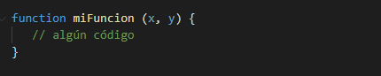
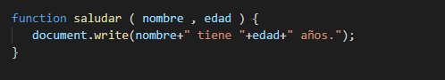
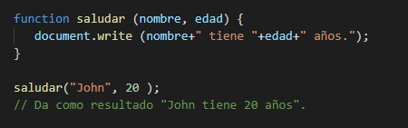

Puede definir varios parámetros para una función separándolos por comas.
El ejemplo anterior define la función miFuncion para tomar dos parámetros.
Los parámetros se utilizan dentro de la definición de la función.
Los parámetros de función son los nombres enumerados en la definición de función.
Al llamar a la función, proporcione los argumentos en el mismo orden en que los definió.
Después de definir la función, puede llamarla tantas veces como sea necesario. Las funciones de JavaScript no verifican el número de argumentos recibidos.
Si se llama a una función con argumentos faltantes (menos de los declarados), los valores faltantes se establecen como indefinidos, lo que indica que a una variable no se le ha asignado un valor.